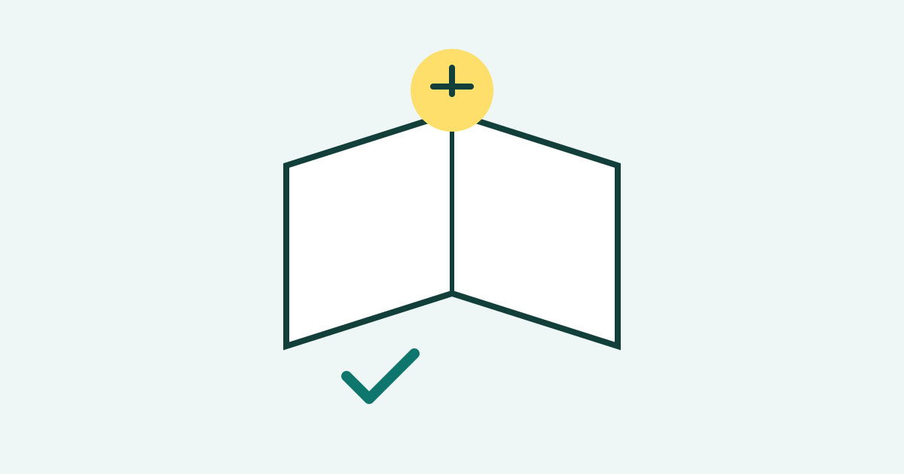

How to Remember What You Read

Many people finish a book, an article, or a chapter and soon forget most of it. This does not mean you have a poor memory. It usually means the reading was too passive. When you only move your eyes across words, your mind can stay quiet and little stays behind. Remembering what you read is a skill, and it improves when you read with a purpose, pause to think, and practise recall afterwards.
Read With a Clear Purpose
Before you start, ask yourself what you want to learn from the text. Are you reading to understand a main idea, to find examples, or to prepare for a discussion? A clear purpose helps you notice important points and ignore minor details. You can also glance at headings, subheadings, and the first sentence of each paragraph before reading in full. This quick preview gives you a map of the text.
As you read, keep a simple question in mind: “What is the author trying to explain here?” When you read to answer a question, you pay more attention to meaning than to individual words. If a section feels confusing, slow down and read it again, rather than rushing ahead and hoping the confusion will disappear on its own.
Pause, Think, and Take Short Notes
Good readers pause often. After each section, stop and ask yourself what you just learned. Try to say the main point in one or two sentences, in your own words. If you cannot explain it simply, you probably need to reread that section. This short pause is more useful than reading ten more pages without understanding.
Write short notes as you go, but keep them brief. Write key ideas, not full sentences copied from the text. Use your own words, simple lists, or small diagrams. Notes written in your own words show that you understood the idea, and they are much easier to review later than a page full of copied text. Keep notes in one place so you can find them again.
Practise Recall After Reading
Recall is the strongest tool for memory. After finishing a chapter or article, close the book and try to remember the main points without looking. Write down what you remember, then check your notes for anything you missed. This effort to recall may feel difficult, but that difficulty is useful: it strengthens the memory each time you succeed.
You can also explain the material to someone else, or pretend to teach it to a friend. Teaching forces you to organise ideas clearly and reveals gaps in your understanding. If you cannot explain a point, return to that part of the text, learn it again, and then try explaining it once more. A short recall session of ten minutes is often more valuable than rereading for an hour.
Connect Ideas and Review Over Time
Memory improves when new ideas connect to things you already know. Ask how a new idea relates to your own experience, to another topic, or to a real example. A simple comparison or example can make an abstract idea easier to remember. You can also create a mental picture or a short story that links the main points together.
Reviewing over time matters just as much. Instead of reviewing everything once, review briefly after a day, then again after a few days, and later after a week. Each short review refreshes the memory before it fades too far. Keep reviews short and focused on recall, not on rereading everything from the beginning. Spaced review turns short-term familiarity into longer-lasting knowledge.
Common Mistakes
One common mistake is highlighting almost everything. When everything looks important, nothing stands out, and highlighting becomes a substitute for thinking. Highlight only a few key phrases, and only after you understand the point. Another mistake is rereading the same text many times without testing yourself. Rereading can feel easy and familiar, but familiarity is not the same as memory.
Many readers also read too fast when they are in a hurry, or read while distracted by messages and noise. Fast, distracted reading may finish the pages, but it leaves little behind. It is better to read a smaller amount with full attention than a large amount with divided attention. Finally, avoid saving all review until the last moment. Memory needs repeated, spaced practice, not one long session at the end.
Frequently Asked Questions
Should I take notes while reading or after reading?
Both can work. Short notes during reading help you capture key points, while a recall summary after reading tests your memory. A good balance is to take brief notes during reading, then close the text and write a short summary from memory.
How can I remember names and numbers from a text?
Link them to something familiar, such as a place, an image, or a simple pattern. Repeat the name or number a few times, use it in a sentence, and review it again later in the day. Short, repeated practice works better than trying to memorise it once.
Is it normal to forget some details?
Yes. Forgetting minor details is normal, especially after a single reading. Focus first on main ideas and how they connect. Details become easier to remember when the main structure is clear and you review the material more than once.
How long should a review take?
A review can take ten to twenty minutes for a chapter or article. The goal is to recall main points, check what you missed, and note what needs more practice. Short, regular reviews are more useful than rare, very long ones.
Conclusion
Remembering what you read is not about reading faster or trying harder in one sitting. It is about reading with purpose, pausing to think, writing short notes in your own words, practising recall, and reviewing over time. Use these steps with your next article or chapter, and you will notice that more of what you read stays with you.